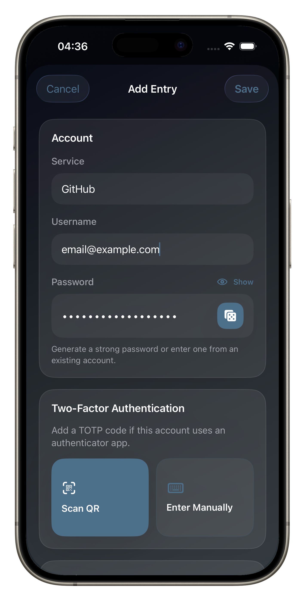
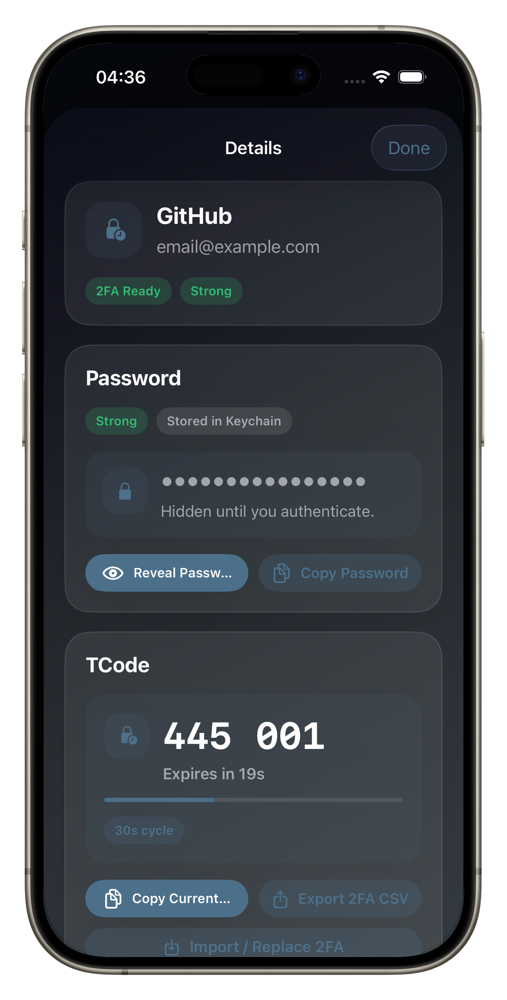
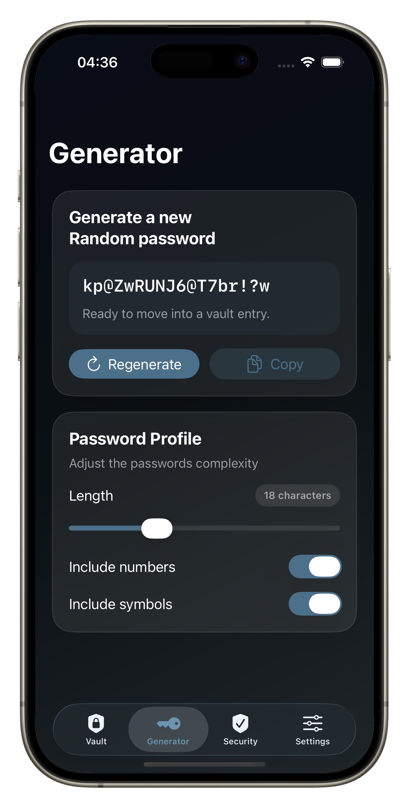

A local-first vault for passwords and TOTP codes. Keep secrets on your device, organized and protected by Keychain and device authentication.



Practical tools for day-to-day credential security.
Create and manage entries with service, username, notes, tags, favorites, and optional TOTP setup.
Passwords and TOTP secrets are stored in Apple Keychain, while metadata stays local in app-managed storage.
Generate strong credentials with configurable length, numbers, and symbols before saving to the vault.
Get quick health findings for weak or reused passwords and missing 2FA so problems are easy to spot.
Protect sensitive actions with biometric or device-owner authentication and optional auto-lock intervals.
Choose unlock behavior, auto-lock timing, appearance, accent theme, and password generator preferences.
Last updated: March 2026
Latch is built around local ownership. The app does not require accounts and does not use analytics or ad trackers. In normal use, your vault data remains on your device.
Latch separates sensitive secrets from metadata to reduce exposure and use platform protections effectively:
Latch supports optional biometric unlock, app-level auto-lock after background inactivity, and re-authentication before revealing or copying sensitive values.
Latch supports CSV import for passwords and per-entry TOTP export to avoid lock-in and help you move your data when needed.
If we make material changes to this page, we will update the policy here and revise the date above.
If you have any questions about this privacy policy or Latch, please contact us at feedback@appsbyjosh.com.
Latch is open source and available on GitHub. Explore the codebase, report issues, and contribute improvements to local-first credential security.